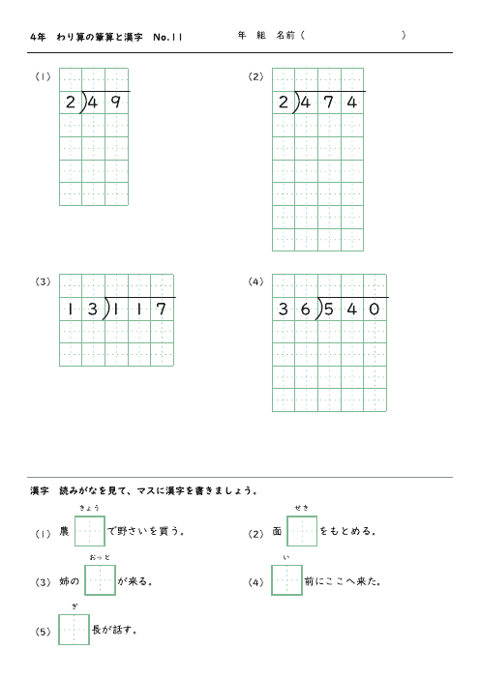
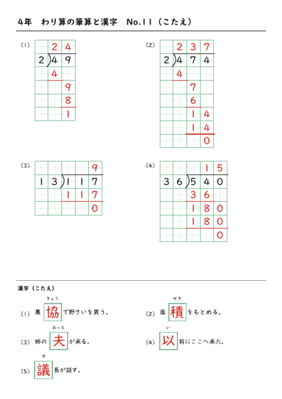
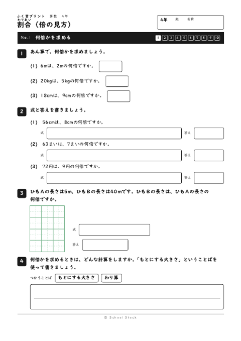
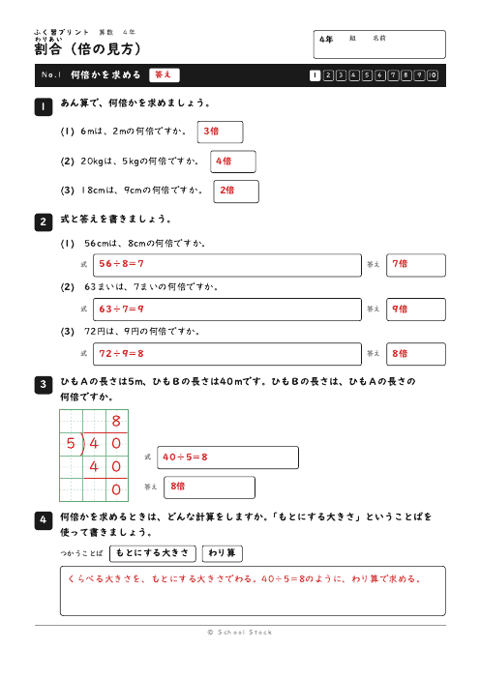

4年の学級で毎日使っているプリントです。1日に2まい使います。1まい目は、わり算の筆算4問と漢字5問です。朝やすきま時間に取り組みます。2まい目は、帰る前の5分から10分で取り組む「さよなら算数」です。これまでに習った単元のふく習を1まいずつ出します。




| 日にち | わり算と漢字 | さよなら算数 | |
|---|---|---|---|
| 11月2日（月） | No.11 | 割合 No.1 | |
| 11月4日（水） | No.12 | 一億をこえる数 No.1 | |
| 11月5日（木） | No.13 | 面積 No.1 | |
| 11月6日（金） | No.14 | 折れ線グラフ No.1 | |
| 11月9日（月） | No.15 | 面積 No.2 | |
| 11月10日（火） | No.16 | 1けたでわるわり算の筆算 No.1 | |
| 11月11日（水） | No.17 | 面積 No.3 | |
| 11月12日（木） | No.18 | 角とその大きさ No.1 | |
| 11月13日（金） | No.19 | 面積 No.4 | |
| 11月16日（月） | No.20 | 垂直・平行と四角形 No.1 | |
| 11月17日（火） | No.21 | 面積 No.5 | |
| 11月18日（水） | No.22 | 小数 No.1 | |
| 11月19日（木） | No.23 | がい数とその計算 No.1 | |
| 11月20日（金） | No.24 | 式と計算の順じょ No.1 | |
| 11月24日（火） | No.25 | がい数とその計算 No.2 | |
| 11月25日（水） | No.26 | 割合 No.2 | |
| 11月26日（木） | No.27 | がい数とその計算 No.3 | |
| 11月27日（金） | No.28 | 一億をこえる数 No.2 | |
| 11月30日（月） | No.29 | がい数とその計算 No.4 |
| 日にち | わり算と漢字 | さよなら算数 | |
|---|---|---|---|
| 12月1日（火） | No.30 | 折れ線グラフ No.2 | |
| 12月2日（水） | No.31 | がい数とその計算 No.5 | |
| 12月3日（木） | No.32 | 1けたでわるわり算の筆算 No.2 | |
| 12月4日（金） | No.33 | がい数とその計算 No.6 | |
| 12月7日（月） | No.34 | 角とその大きさ No.2 | |
| 12月8日（火） | No.35 | がい数とその計算 No.7 | |
| 12月9日（水） | No.36 | 垂直・平行と四角形 No.2 | |
| 12月10日（木） | No.37 | がい数とその計算 No.8 | |
| 12月11日（金） | No.38 | 面積 No.6 | |
| 12月14日（月） | No.39 | がい数とその計算 No.9 | |
| 12月15日（火） | No.40 | 小数 No.2 | |
| 12月16日（水） | No.41 | 小数のかけ算とわり算 No.1 | |
| 12月17日（木） | No.42 | 式と計算の順じょ No.2 | |
| 12月18日（金） | No.43 | 小数のかけ算とわり算 No.2 | |
| 12月21日（月） | No.44 | 割合 No.3 | |
| 12月22日（火） | No.45 | 小数のかけ算とわり算 No.3 | |
| 12月23日（水） | No.46 | 一億をこえる数 No.3 | |
| 12月24日（木） | No.47 | 小数のかけ算とわり算 No.4 |